Apresentação do sistema
Gestão de fretes do pedido ao pagamento
Fretes, caminhões, motoristas, frotistas, clientes e financeiro num sistema só, com um assistente de IA que encontra o caminhão certo. Feito sob medida para a Fretes Flávia Reolon Transportes & Logística.
Conteúdo
O que você vai ver
A solução
Um sistema só para a operação inteira
Nos fretes
Cotação, agendamento, trânsito e entrega, com a ordem de carregamento pronta para imprimir ou mandar no WhatsApp do motorista.
Na frota
Os caminhões, motoristas e frotistas da planilha da região, com busca por placa, nome, cidade ou telefone e contato com um toque.
No dinheiro
Quanto cada frete fatura, quanto vai para o motorista, o adiantamento, o saldo e a margem. Tudo que falta receber e pagar.
Painel
A operação do mês em uma tela
- Faturamento do mês com a quantidade de fretes e a margem
- Fretes em trânsito e agendados
- A receber dos clientes e a pagar aos motoristas já descontando os adiantamentos
- Faturamento dos últimos 6 meses e caminhões por cidade
- Busca rápida de caminhão direto do painel
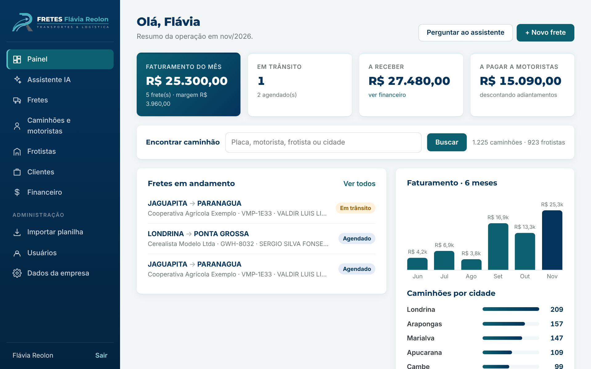
Fretes
Da cotação à entrega
- Lista com rota, cliente, caminhão, valor e margem de cada frete
- Filtro por situação: cotação, agendado, em trânsito, entregue e cancelado
- Busca por cidade, cliente, placa, motorista ou mercadoria
- Filtro por mês com o total e a margem do período
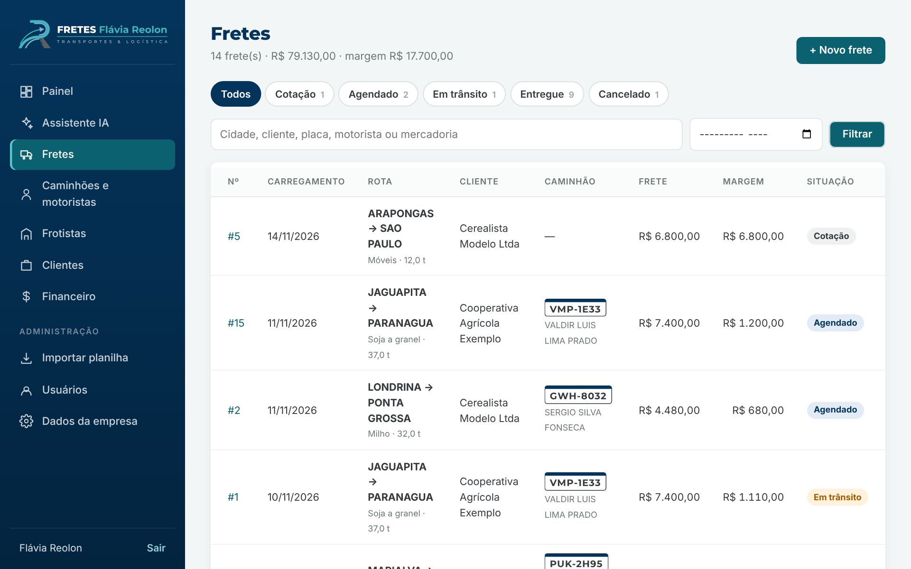
Lançar um frete
Margem e saldo na hora
- Origem, destino, cliente, mercadoria e peso
- Caminhão escolhido pela placa ou deixado em branco na cotação
- Datas de carregamento e previsão de entrega
- Valor do frete, do motorista e do adiantamento o sistema calcula a margem e o saldo enquanto você digita
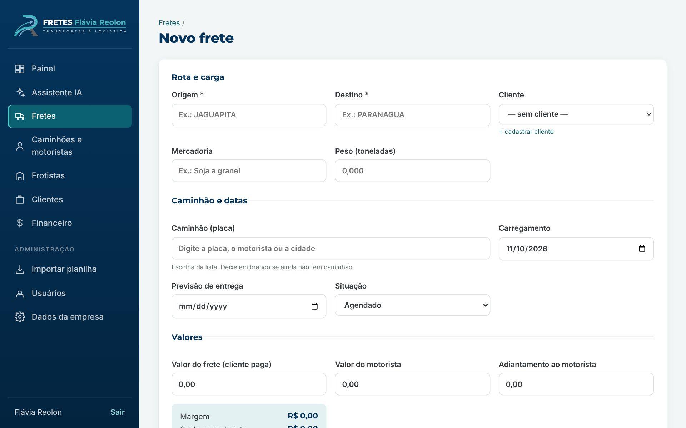
Ordem de carregamento
Pronta para o motorista
- Carga, caminhão, frotista e valores numa tela só
- Enviar ao motorista: abre o WhatsApp dele com a ordem já escrita
- Imprimir ordem: com o nome, o e-mail e o telefone da empresa
- Mudar a situação com um clique
- Marcar o recebimento do cliente e o pagamento do motorista
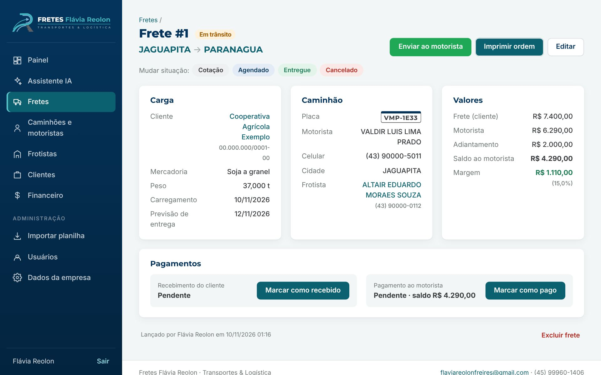
Caminhões e motoristas
A frota da região na palma da mão
- 1.225 caminhões da planilha da região de Jaguapitã
- Busca por placa, motorista, frotista, cidade ou telefone
- Filtro por cidade e por tipo de caminhão
- WhatsApp e ligação com um toque
- Lançar frete direto da linha do caminhão
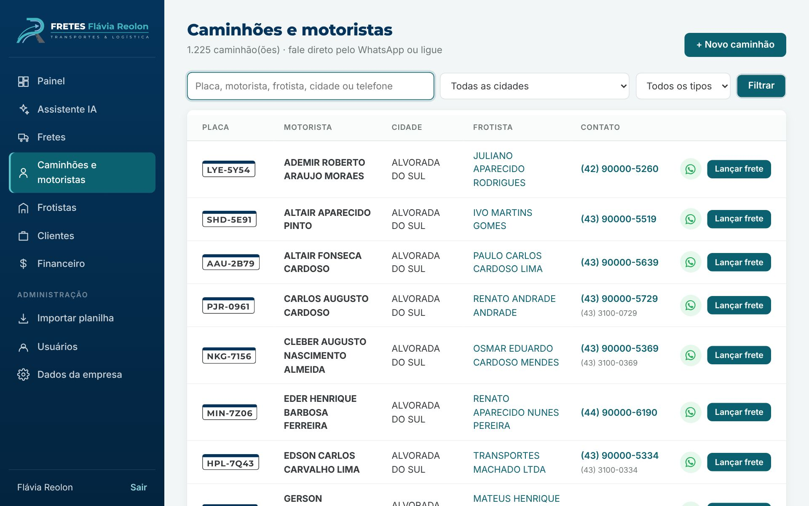
Frotistas
Quem tem mais caminhões
- 923 donos de frota, do maior para o menor
- Ficha com todos os caminhões do frotista
- Quantos fretes já fez com a empresa e quanto já foi pago
- WhatsApp do frotista e de cada motorista
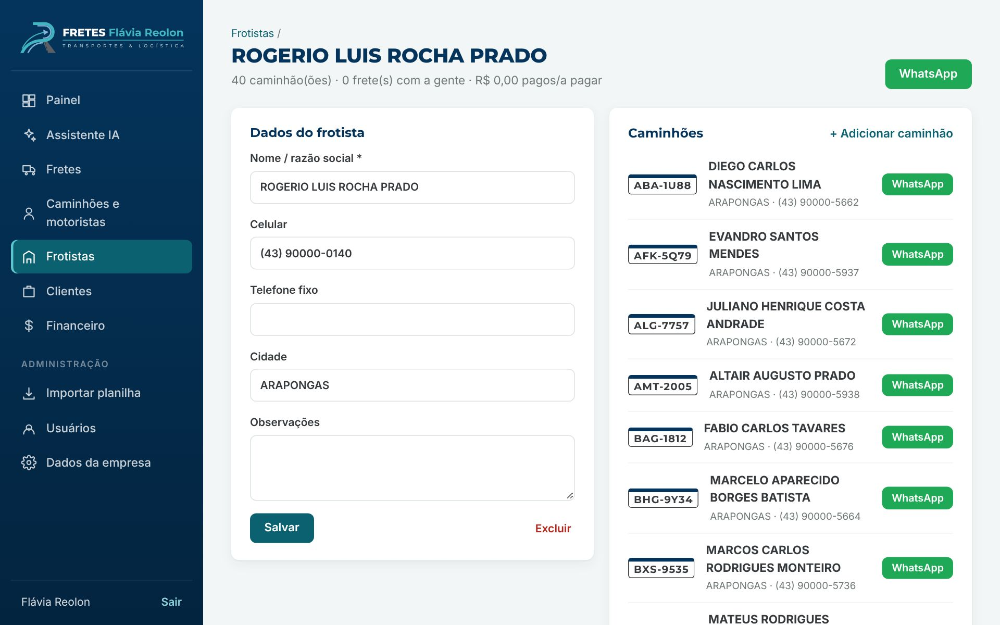
Clientes
Quanto cada um fechou e deve
- Cooperativas, cerealistas, indústrias e produtores
- CNPJ, contato, telefone e cidade
- Total em fretes e o que está em aberto por cliente
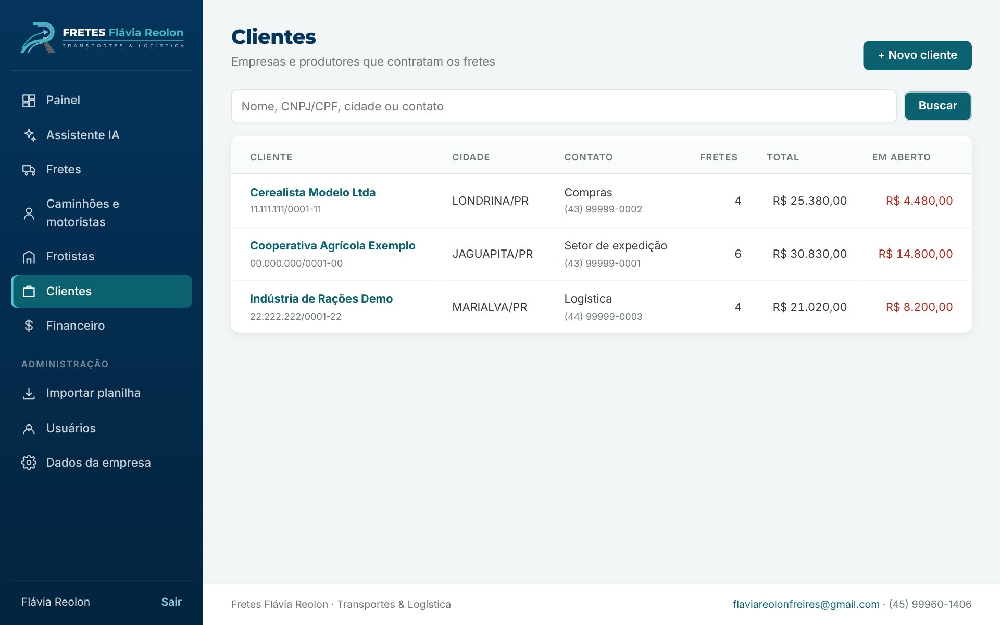
Financeiro
O que entra, o que sai e o que sobra
- Faturado no mês, custo com motoristas e margem
- A receber dos clientes com o telefone para cobrar
- A pagar aos motoristas com o saldo depois do adiantamento
- Baixa com um clique em cada frete
- Escolha o mês e veja o resultado
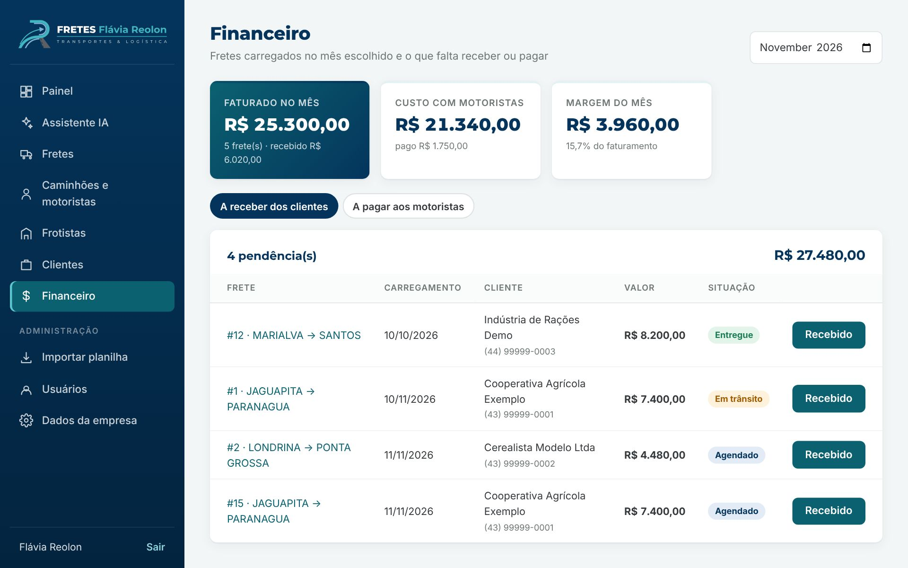
Importar planilha
A frota atualizada sem redigitar
- Envie a planilha da região em Excel (.xlsx) ou CSV
- Placa que já existe é atualizada motorista, cidade e telefones
- Placa nova é cadastrada e o frotista é criado se ainda não existir
- Nada é apagado: fretes e clientes continuam como estão
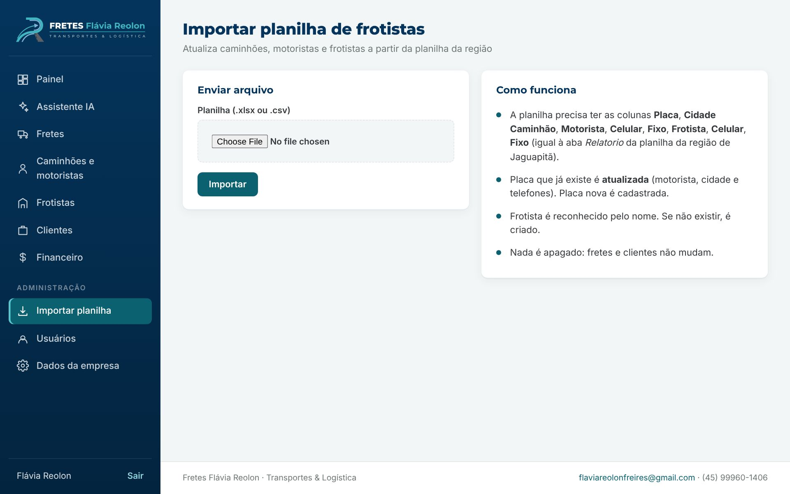
Assistente de IA
Pergunte como no WhatsApp
O assistente usa inteligência artificial e consulta os dados do próprio sistema para responder. Escreva do seu jeito, sem menu nem filtro.
Tem carreta em Marialva pra amanhã?
Achei 147 caminhões de Marialva. Aqui estão os primeiros, com o WhatsApp de cada motorista.
Quanto falta receber dos clientes?
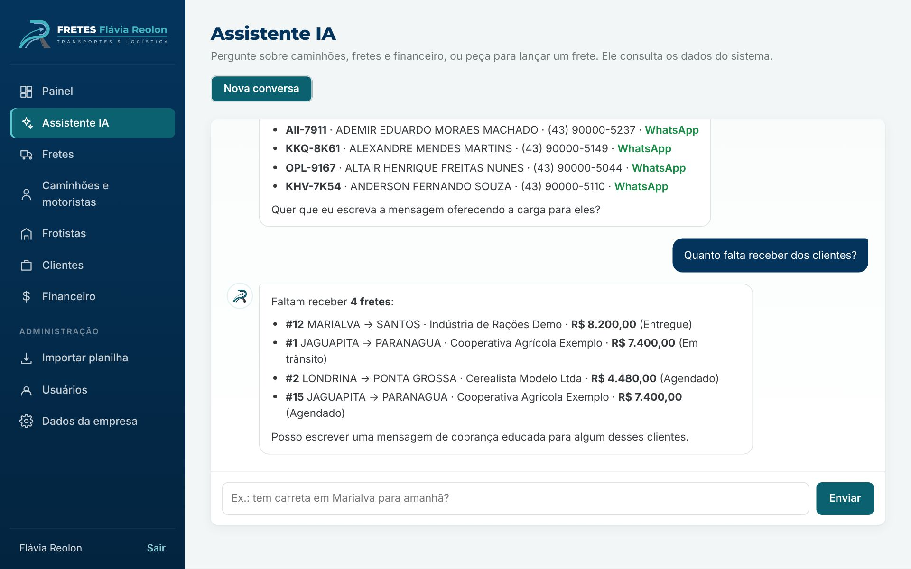
O que o assistente faz
Busca, resume e lança
Acha o caminhão
Por cidade, placa, motorista ou frotista, com o link do WhatsApp pronto. Conta quantos caminhões tem em cada cidade.
Resume os fretes
Lista os fretes por situação, mostra os detalhes de um frete e escreve a mensagem para oferecer a carga.
Cuida do dinheiro
Diz quanto foi faturado, quanto falta receber e pagar, e escreve a cobrança educada para o cliente.
Lança e atualiza
Lança um frete novo e muda a situação de um frete quando você pede, mostrando um resumo para você confirmar antes de gravar.
No celular
Para usar na estrada
Tudo se adapta à tela do celular: o painel, a lista de caminhões, a ordem de carregamento e o assistente. Também dá para instalar como aplicativo, com o ícone da Fretes Flávia Reolon.
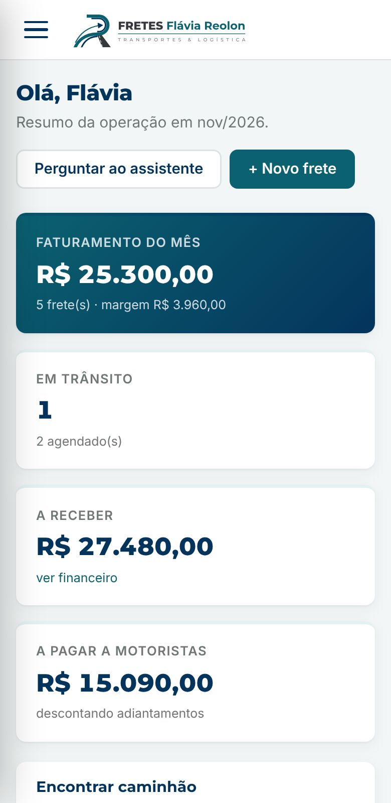
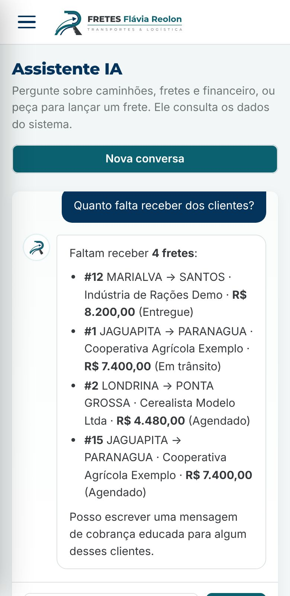
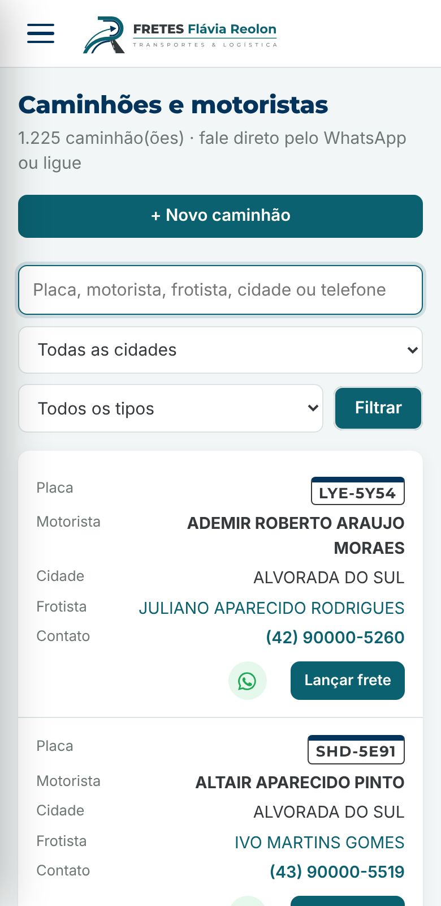
Identidade visual
Logo nova nas cores da marca
A logo foi redesenhada em vetor, com o R da Flávia Reolon formando a estrada. Ela aparece no sistema, na ordem impressa e no ícone do aplicativo.
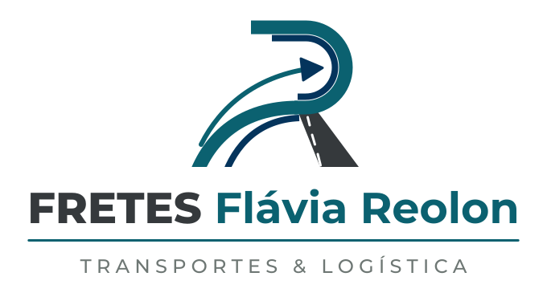
Acessos e segurança
Cada um vê o que precisa
- Entrada com e-mail e senha
- Administrador vê tudo, importa a planilha e cuida dos usuários
- Funcionário lança e acompanha fretes, caminhões e clientes
- Dados da empresa num lugar só aparecem no rodapé, na ordem impressa e no WhatsApp
- Formulários protegidos contra envio falso
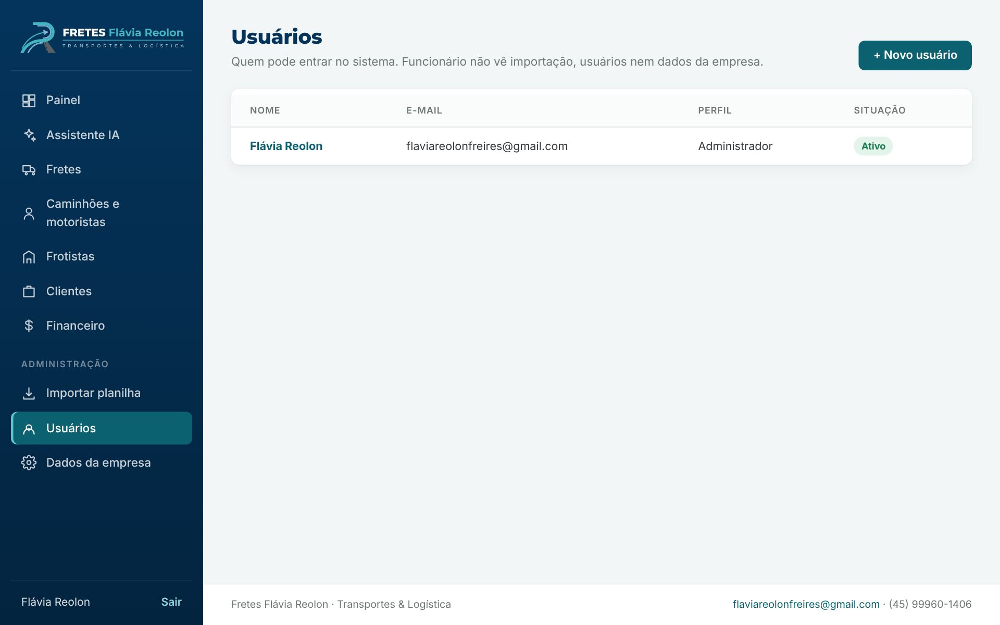
Próximos passos
Do sistema pronto ao primeiro frete
- Publicaçãosistema no ar com banco de dados e acesso protegido por senha
- Frota e clientesplanilha da região importada e clientes cadastrados
- Assistente de IAligado com a chave da Anthropic e testado com perguntas do dia a dia
- Treinamentolançar frete, mandar a ordem ao motorista, financeiro e assistente
Fretes Flávia Reolon Transportes & Logística · flaviareolonfreires@gmail.com · (45) 99960-1406